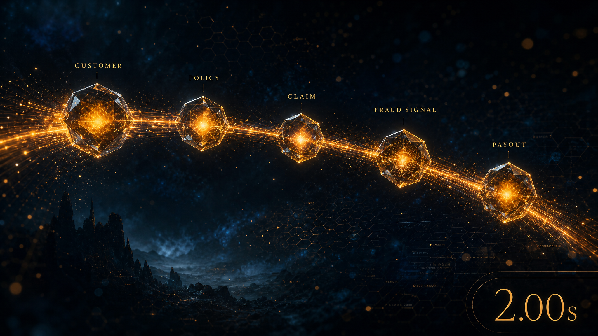
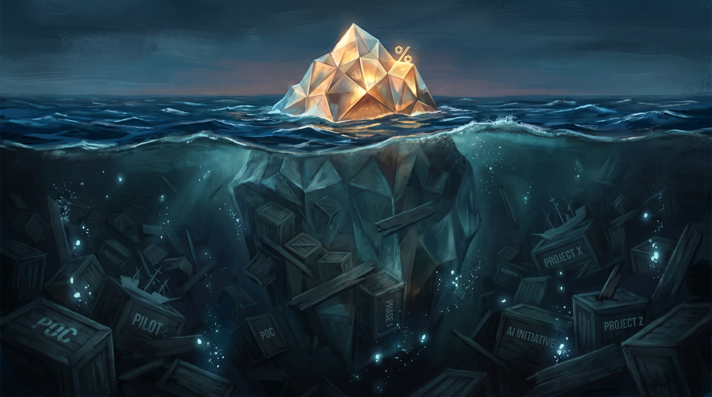

Follow the Five Percent
The 5% will connect their data, empower their staff, and own their intelligence.
The 5% are not smarter. They are not better funded. They simply noticed, at some point, that the world is made of relationships, and built their systems to remember that.
Instead of farming out intelligence - grow your own.
Space Goats: Beyond the Table Ladders
Episode 1 - 16 min - May 2026Two critics dissect the goat metaphor, the shepherd in the dirt, and the executive who strapped a space helmet onto a piece of livestock.

The era of the GBP 330 million band-aid is over.
For decades, the Great SQL Monoculture has kept our enterprise data tied up like obstinate goats in a paddock, facing different directions and resolutely refusing to mingle. And for decades, the insurance industry and the NHS have paid a staggering premium to external consultants just to tell us what those isolated goats are thinking.
The Two-Second Claim
A customer files a claim. Lemonade's AI reads it, checks the policy, runs 18 fraud algorithms, and sends the money. That takes two seconds. The same claim at a typical UK insurer takes 25 to 30 days.
Root Insurance connects drivers to their driving through live telematics. Revenue: $1.52 billion, up 29% in a year. Allianz Australia processes storm claims in under 5 minutes. AXA Switzerland hits greater than 99% accuracy in automated claims triage.
Four companies. Four different tech stacks. One thing in common: they kept the connections in their data alive.

But the 5% of companies that are actually succeeding with AI - the Lemonades, the Roots, the forward-thinking institutions - have cracked the code. They are not buying better algorithms or more expensive black boxes. They are building better environments. They are tearing down the fences, unclipping the carabiners, and letting their data connect in rich, semantic graphs.


Six Times
McKinsey found that AI-leading insurers created 6.1 times the total shareholder return of laggards over five years. Not 6.1 percent. Six times.
The AI in insurance market is projected to reach $175 to $303 billion by 2035. Deloitte projects $160 billion in savings from fraud analytics alone. That money will go somewhere. The only question is whose AI can reason about their business when it arrives.
If your competitor is in the 5% and you are in the 95%, they are not slightly ahead. They are in a different race.

Most importantly, they are handing the keys back to their own people.
Artificial intelligence is not a software subscription you can rent from an external vendor; it is a structural capability you must cultivate from within. When you teach your underwriters, your clinicians, and your claims handlers the true shape of the data, the magic returns in-house.
What the 95% Look Like
A customer has motor, pet, and home policies with the same insurer. Her house is 200 metres from a flood plain. Her motor renewal is in six weeks. Five systems hold these facts. None of them know the others exist.
The renewal goes out at the standard rate. No bundle. No flood risk adjustment. The customer gets a better offer from a competitor and leaves. The insurer loses the household.
Multiply by a million customers and you have the 95%. The connections were thrown away before the AI ever saw the data. Not deliberately. They simply did not fit the shape. A spreadsheet has no column for "is married to" or "lives near a flood plain."
You no longer need to outsource your corporate memory. The AI becomes explainable, and treating people like people becomes a natural byproduct of your architecture. Consumer Duty - being fair. Customer Care - making people feel listened to. Duty of Care - the whole-person responsibility the NHS carries every day. These are not compliance checkboxes; they are what connected data does automatically when the relationships are intact. And the multi-million-pound consulting dependency simply evaporates.
The 95% will keep writing blank cheques to external vendors and wondering why their pilots continuously fail to reach production.
The 5% will connect their data, empower their staff, and own their intelligence.
The other 95% are still extracting it into rows, one cell at a time, and wondering why the model cannot tell them anything they did not already know.

The Shepherd in the Dirt
The goats are still tethered to their separate posts. A semantic overlay does not move them. It draws a map in the dirt between them. Nothing breaks. Nothing migrates. But now the AI can see the relationships.
A pilot costs GBP 200,000 to 400,000. For context, KPMG was paid GBP 8.5 million just to promote adoption of the NHS Palantir platform that two-thirds of trusts declined to use. The GBP 330 million band-aid. Seven years. No IP transfer. No code stays behind.
You do not need a GBP 330 million contract. You need one team, one domain, one set of relationships drawn in the dirt. The virus does the rest.

Learn and believe in your abilities. In Insurance and the NHS, the answer is not Palantir. The answer is you.
Follow the Five Percent.